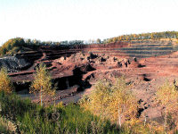

|

Vue générale de la carrière
où l'on aperçoit, au centre, les
cheminées et dykes des deux éruptions.
|
En face de Vulcania, juste de l'autre
côté de la route, une carrière de
pouzzolane ouverte en 1946 pour fournir à la
région de Rouen de quoi faire des parpaings
(reconstruction après guerre) a permis de mettre
à jour les "dessous" cachés de ce volcan
complexe.
Il existe de nombreux sites internet
très documentés sur le sujet mais j'ai trop
apprécié la visite pour ne pas vous en faire
part.
|